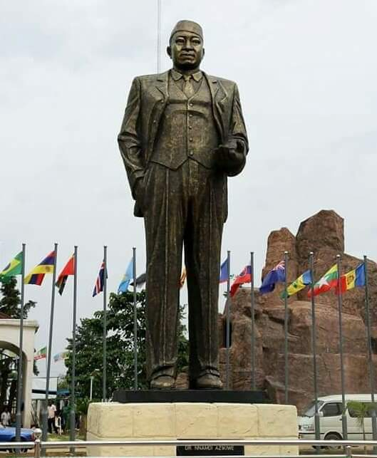
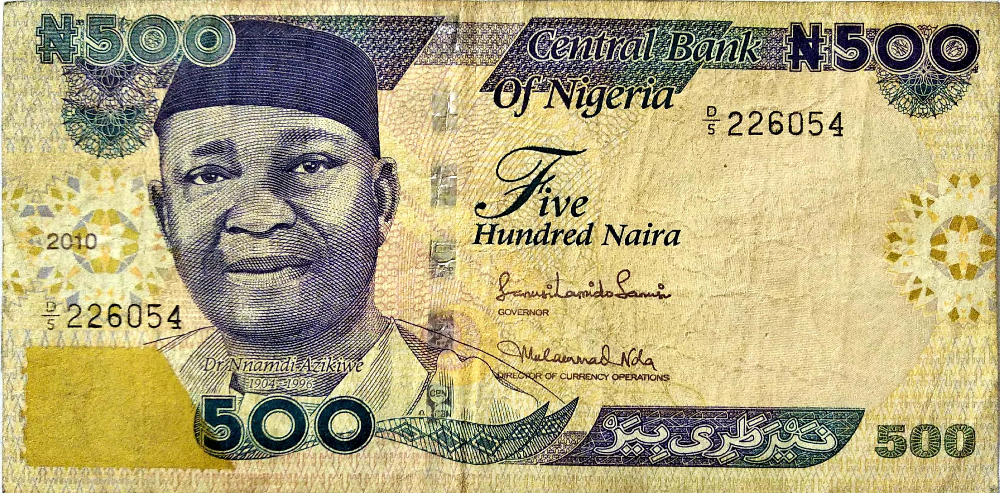

Honours
| Places Named After Azikiwe |
|---|
| Azikiwe-Nkrumah Hall, the oldest building on the Lincoln University campus |
| Nnamdi Azikwe Hall, University of Ibadan |
| Nnamdi Azikiwe International Airport in Abuja |
| Nnamdi Azikiwe Stadium in Enugu |
| Nnamdi Azikiwe University in Awka, Anambra State |
| Nnamdi Azikiwe University Teaching Hospital in Nnewi |
| Nnamdi Azikiwe Library at the University of Nigeria, Nsukka |
| Nnamdi Azikiwe Press Centre, Dodan Barracks, Obalende, Ikoyi, Lagos |
| Azikiwe Avenue in Dar es Salaam, Tanzania |
| CRDB Azikiwe Branch in Dar es Salaam |
| His picture appears on Nigeria's ₦500 banknote since 2001. |


Works
| Zik (1961) |
| My Odyssey: An Autobiography (1971) |
| Renascent Africa (1973) |
| Liberia in World Politics (1931) |
| One Hundred Quotable Quotes and Poems of the Rt. Hon. Dr. Nnamdi Azikiwe (1966). ISBN 978-2736-09-0 |
| Political Blueprint for Nigeria (1943) |
| Economic Reconstruction of Nigeria (1943) |
| Zik: A Selection of the Speeches of Dr. Nnamdi Azikiwe (1961) |
| Assassination Story: True or False? (1946) |
| Before Us Lies the Open Grave (1947) |
| The Future of Pan-Africanism (1961) |
| The Realities of African Unity (1965) |
| Origins of the Nigerian Civil War (1969) |
| I Believe in One Nigeria (1969) |
| Peace Proposals for Ending the Nigerian Civil War (1969) |
| Dialogue on a New Capital for Nigeria (1974) |
| Creation of More States in Nigeria, A Political Analysis (1974) |
| Democracy with Military Vigilance (1974) |
| Reorientation of Nigerian Ideologies: lecture on 9 December 1976, on the eve of the launching of the UNN Endowment Fund (1976) |
| Our Struggle for Freedom; Onitsha Market Crisis (1976) |
| Let Us Forgive Our Children. An appeal to the leaders and people of Onitsha during the market crisis (1976) |
| A Collection of Poems (1977) |
| Civil War Soliloquies: More Collection of Poems (1977) |
| Themes in African Social and Political Thought (1978) |
| Restoration of Nigerian Democracy (1978) |
| Matchless Past Performance: My Reply to Chief Awolowo's Challenge (1979) |
| A Matter of Conscience (1979) |
| Ideology for Nigeria: Capitalism, Socialism or Welfarism? (1980) |
| Breach of Trust by the NPN (1983) |
| History Will Vindicate The Just (1983) |